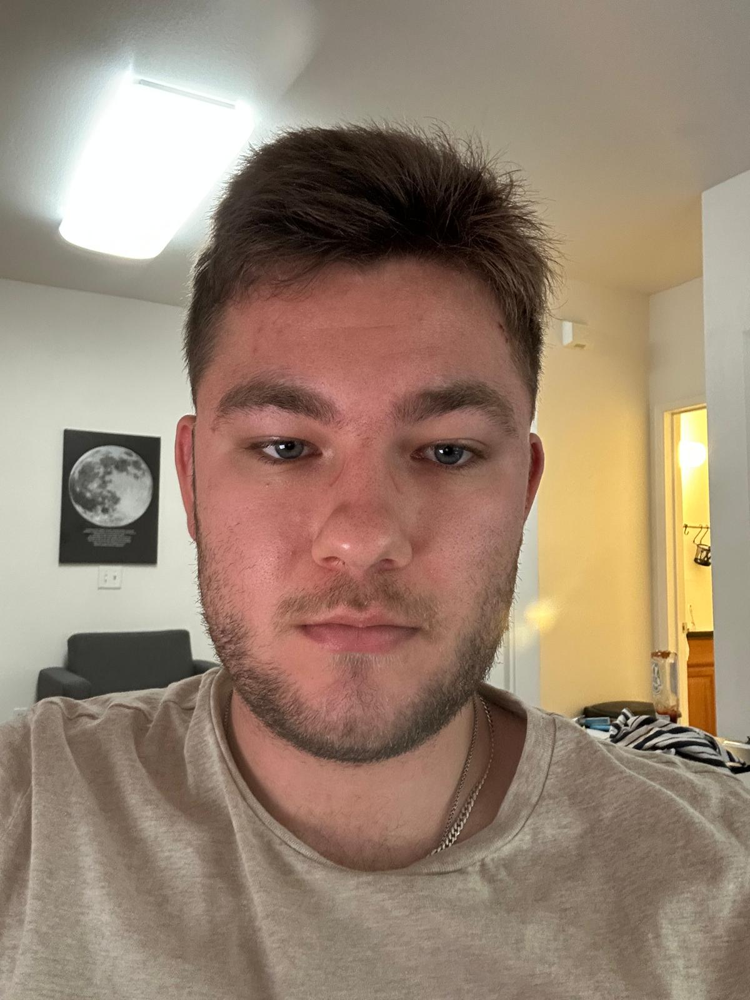
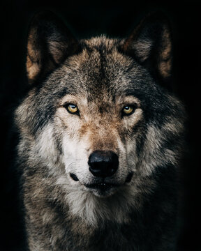

Example
Project 2 · Computational Photography
This project starts with individual pixels and builds toward images that change depending on how they are viewed. It covers convolution, edge detection, sharpening, hybrid images, frequency stacks, and multiresolution blending.
01 · Part 1.1
Two versions of 2D convolution were implemented from scratch using only NumPy operations: one using four loops and another using two loops with a NumPy sum. In both versions, the kernel is flipped and the image is padded with zeros so the output keeps the original dimensions. Each output pixel is then calculated from the matching image window and kernel. Both implementations were compared with scipy.signal.convolve2d and produced the same results.

Runtime comparison
The four-loop version was the slowest because every multiplication was handled inside Python. Moving the two inner loops into NumPy reduced the runtime considerably, while SciPy remained the fastest option.
for i in range(image_height):
for j in range(image_width):
for n in range(kernel_height):
for m in range(kernel_width):
ans[i, j] += padd_image[i + n, j + m] * flip_kernel[n, m]for i in range(image_height):
for j in range(image_width):
ans[i, j] = np.sum(padd_image[i:i+kernel_height, j:j+kernel_width] * flip_kernel)
box_filter = np.ones((9, 9)) / 81
dx = np.array([[1, -1]])
dy = np.array([[1], [-1]])02 · Parts 1.2 and 1.3
The finite difference filters measure changes in the horizontal and vertical directions. Their results are combined using sqrt(Dx² + Dy²) to obtain the gradient magnitude. After trying several values, 0.215 gave the best balance between keeping real edges and removing noise. Blurring the image first with a 9×9 Gaussian filter and sigma 2 reduced the small background responses, although the remaining edges became slightly thicker. Convolving the Gaussian with the derivative filters first gave the same gradient result as blurring and differentiating in two separate steps.


03 · Part 2.1
A Gaussian blur keeps the low frequencies of an image. Subtracting this blurred version from the original isolates the high frequencies, which contain most of the fine edges and details. The sharpened image is calculated as I + alpha(I - G * I). This can also be combined into the single unsharp-mask filter (1 + alpha)delta - alphaG, where delta is the identity filter that leaves the original image unchanged. Several alpha values were compared. The portrait experiment shows that sharpening restores some edge contrast, but it cannot fully recover details removed by a strong blur.


04 · Part 2.2
Each pair of images was aligned so that its main facial features stayed in corresponding positions. The low frequencies of one image were then combined with the high frequencies of the other. Up close, the fine high-frequency details are easier to notice. From farther away, those details become less visible and the low-frequency image takes over. The sigma values act as the cutoff choices and control how much detail remains in each part. After multiple rounds of trial and error, I settled on values that kept both images recognizable while still creating a clear distinction between what is visible from close up and farther away. The Fourier plots for the portrait and wolf show how blurring concentrates information near the center while the high-frequency component spreads it outward.
Example



Full analysis

Custom


05 · Part 2.3
The Gaussian stack contains increasingly blurred versions of the image without any downsampling, so every level keeps the original dimensions. The blur uses sigma = 2^level. Each Laplacian level is found by subtracting two neighboring Gaussian levels, leaving a different band of image frequencies. The final Gaussian level is kept as the lowest-frequency part. Adding every Laplacian level together reconstructs the original image. In the Figure 3.42 recreation, levels 0, 2, and 4 show the high-, medium-, and low-frequency bands. The left and middle columns contain the masked Apple and Orange contributions, while the right column contains their sum.


06 · Part 2.4
The apple and orange are blended using eight-level Gaussian and Laplacian stacks. A Gaussian stack is also created for the mask, causing its sharp boundary to become smoother at lower frequencies. At every level, the mask selects a weighted contribution from each image's Laplacian level. Adding the blended levels reconstructs the final result. Compared with the hard splice, this method creates a much smoother transition between the two images.


Custom results
The same blending method also works with masks that are not straight lines. An elliptical mask places the crocodile in the center of the lion image. For the portrait and wolf, my weird round triangle shape keeps the portrait in the middle while the wolf remains outside it. Blurring these masks at every level softens their borders and helps the facial features blend without a single obvious seam.


Final observation
The most important idea in this project is that an image can be separated into different frequency ranges. The same idea appears in edge detection, sharpening, hybrid images, and multiresolution blending. Once the high and low frequencies can be controlled separately, details can be emphasized, hidden by viewing distance, or joined across a much smoother boundary.